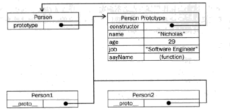
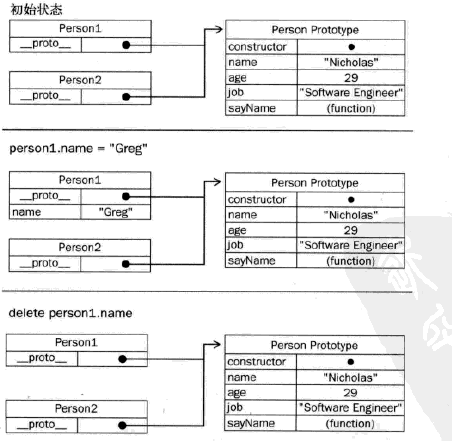
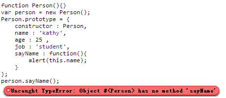
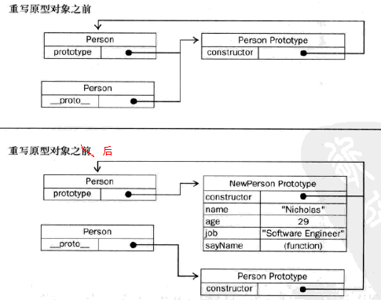

1.创建对象
var person = new Object();
person.name = 'kathy';
person.age = 25;
person.job = 'frontend';
person.sayName = function(){
alert(this.name);
}
缺点：
使用同一个接口创建很多对象，会产生大量重复代码
2.工厂模式
function createPerson(name,age,job){
var o = new Object();
o.name = name;
o.age = age;
o.job = job;
o.sayName = function(){
alert(this.name);
}
return o;
}
var p1 = createPerson('kathy',25,'frontend');
var p2 = createPerson('jack',24,'backend');
p1.sayName(); //'kathy'
p2.sayName(); //'jack'
用函数来封装以特定接口创建对象的细节
优点：
解决了创建多个相似对象的问题
缺点：
没有解决对象识别的问题（怎样知道一个对象的类型）
不能用new
函数重复定义 （p1.sayName == p2.sayName） false
3.构造函数模式：
function Person(name,age,job){
this.name = name;
this.age = age;
this.job = job;
this.sayName = function(){
alert(this.name);
};
}
var p1 = new Person('kathy',25,'frontend');
var p2 = new Person('jack',24,'backend');
p1.sayName(); //'kathy'
p2.sayName(); //'jack'
区别工厂模式：
1、没有显式的创建对象
2、直接将属性和方法赋给了this对象
3、没有return语句
创建Person的新实例4步骤：
1、创建一个新的对象
2、将构造函数的作用域赋给新对象（this指针就指向了这个新对象）
3、执行构造函数中的代码（为这个新对象添加属性）
4、返回新对象
3.1对象识别问题
function Func() {}; // 定义一个空函数
var obj1 = new Func(); // 使用new操作符，借助Func函数，创建了一个对象
var obj2 = new Func; // 函数也可以没有括号，但仍将调用该函数
js的语法可真是飘逸，该如何理解呢？
其实，上面的写法可以写成以下等价形式
function Func() {};
var obj = {};
Func.call(obj); // 将obj对象作为this指针调用Func函数
优点
解决了对象识别问题，可以将它的实例表示为一种特定的类型。
alert(p1.constructor == Person); //true
alert(p2.constructor == Person); //true
p1和p2分别保存着Person的一个不同的实例，都有一个constructor属性，指向Person
对象的constructor属性最初是用来表示对象类型的。
对于检测对象类型，还是instanceof可靠些，
alert(p1 instanceof Object); //true
alert(p1 instanceof Person); //true
alert(p2 instanceof Object); //true
alert(p2 instanceof Person); //true
3.2构造函数的三种调用方式
//当做构造函数使用，构造函数与其他函数唯一区别：调用方式不同，用new
var person = new Person('kathy',25,'student');
person.sayName();
//作为普通函数调用
Person('Jack',30,'doctor');
window.sayName();
//在另一个对象的作用域中调用
var o = new Object();
Person.call(o,'Cate',27,'nurse');
o.sayName();
当在全局作用域中调用一个函数，this对象总是指向Global对象（在浏览器中就是window对象）
可以使用call(),apply()在某个特殊对象的作用域中调用Person()函数。这里是在o的作用域中调用的，调用后o就拥有了所有属性和sayName()方法。
3.3构造函数的问题
// 函数是对象，每定义一个函数，也就是实例化了一个对象。
function Person(name,age,job){
this.name = name;
this.age = age;
this.job = job;
this.sayName = new Function(" alert(this.name)"); //与申明函数在逻辑上是等价的
}
缺点：
每个方法都要在每个实例上重新创建一遍，p1和p2都有一个名为sayName()的方法，但是不是同一个Function的实例，却拥有同样的功能。
alert(p1.sayName() == p2.sayName()); //false
解决：
把函数定义移到构造函数外部：
function Person(name,age,job){
this.name = name;
this.age = age;
this.job = job;
this.sayName = sayName;
}
function sayName(){
alert(this.name);
}
var p1 = new Person('kathy',25,'student')
var p2 = new Person('cgg',24,'programmer');
p1.sayName();
p2.sayName();
alert(p1.constructor == Person); //true
alert(p2.constructor == Person); //true
alert(p1 instanceof Object); //true
alert(p1 instanceof Person); //true
alert(p2 instanceof Object); //true
alert(p2 instanceof Person); //true
alert(p1.sayName == p2.sayName); //true
p1和p2对象共享在全局作用域中定义的一个sayName()函数。
问题：
让全局作用域有点名不副实，
如果对象需要定义多个方法，就要定义多个全局函数，那么这个自定义的应用类型就毫无封装性可言了。
4.原型模式
原型好处：可以让所有对象实例共享它所包含的属性和方法，
不必再构造函数中定义对象信息，可以直接添加到原型对象中。
function Person(){}
Person.prototype.name = 'kathy';
Person.prototype.age = 25;
Person.prototype.job = 'student';
Person.prototype.sayName = function(){
alert(this.name);
};
var p1 = new Person();
p1.sayName(); //'kathy'
var p2 = new Person();
p2.sayName(); //'kathy'
alert(p1.sayName == p2.sayName); //true
将Person的所有属性都直接添加到Person的prototype属性中，构造函数变成了空函数。
仍可调用构造函数创建一个新对象，新对象还会具有相同的属性和方法，p1和p2访问的是同一组属性和同一个sayName()函数；
4.1理解原型：

一旦创建函数，就为该函数创建一个prototype属性。
默认情况，所有prototype属性自动获得一个constructor属性，至于其他方法，都是从Object继承而来。
- Person.prototype 指向原型对象
- Person.prototype.constructor 又指回Person
- Person的实例person1,person2包含一个内部属性
_proto_，指向Person.prototype，他们与构造函数没有直接的关系
注意： 这两个实例都不包含属性和方法，但我们却可以调用person1.sayName()，是通过查找对象属性的过程来实现的。
查找顺序：先对象本身，后原型属性
function Person(){}
Person.prototype.name = 'kathy';
Person.prototype.age = 25;
Person.prototype.job = 'frontend';
Person.prototype.sayName = function(){
alert(this.name);
}
var p1 = new Person();
var p2 = new Person();
p1.name = 'xuxuan';
alert(p1.name); //'xuxuan'
alert(p2.name); //'kathy'
p1.name = null;
alert(p1.name); // null
delete p1.name;
alert(p1.name); // 'kathy'
当为对象实例添加一个属性时，会屏蔽原型对象中同名属性，添加的这个属性会阻止我们访问原型中的那个属性，但不会修改那个值。
即使将这个属性设置为null，也只会在实例中设置这个属性，不会恢复其指向原型的链接。
不过可以通过delete操作符完成删除实例的属性，从而能重新访问原型中的属性。
4.2 isPrototypeOf、hasOwnProperty、in属性
function Person(){}
Person.prototype.name = 'kathy';
Person.prototype.age = 25;
Person.prototype.job = 'student';
Person.prototype.sayName = function(){
alert(this.name);
}
var p1 = new Person();
var p2 = new Person();
alert(Person.prototype.isPrototypeOf(p1)); //true
alert(Person.prototype.isPrototypeOf(p2)); //true
alert(p1.hasOwnProperty('name')); //fasle
p1.name = 'xuxuan'
alert(p1.name); //'xuxuan'
alert(p1.hasOwnProperty('name')); //true
alert(p2.name); //'kathy'
alert(p2.hasOwnProperty('name')); //false
delete p1.name;
alert(p1.name); //'kathy'
alert(p1.hasOwnProperty('name')); //false
alert('name' in p1); //true
上段代码图解如下：

总结如下：
| isPrototypeOf | obj1.isPrototypeOf(obj2); |
用来判断指定对象obj1是否存在于另一个对象obj2的原型链中，是则返回true，否则返回false。 |
| hasOwnProperty | obj.hasOwnProperty('name'); |
只检测对象本身的属性 |
| in | 'name' in obj |
检测对象本身的属性或原型链的属性 |
| hasPrototypeProperty(自定义方法) | hasPrototypeProperty(obj,'name') |
‘name’属性只存在于原型链的属性，而不存在于对象本身的属性 |
function hasPrototypeProperty(object,name){
return !object.hasOwnProperty(name) && (name in object);
}
function Person(){}
Person.prototype.name = 'kathy';
Person.prototype.age = 25;
Person.prototype.job = 'student';
Person.prototype.sayName = function(){
alert(this.name);
}
var p = new Person();
alert(hasPrototypeProperty(p,'name')); //true
p.name = 'xuxuan';
alert(hasPrototypeProperty(p,'name')); //false
4.3更简单的原型语法
function Person(){}
Person.prototype = {
name : 'kathy',
age : 25 ,
job : 'student',
sayName : function(){
alert(this.name);
}
};
var person = new Person();
alert(person instanceof Object); //true
alert(person instanceof Person); //true
alert(person.constructor == Object); //true
alert(person.constructor == Person); //false
为了从视觉上更好的封装原型，用一个包含所有属性和方法的对象字面量来重写整个原型对象；
每创建一个函数，同时也会创建它的prototype对象，其会自动获得constructor属性；
Person.prototype = {...};本质上重写了默认的prototype属性，constructor属性不再指向Person，而指向Object函数。
如果写成Person.prototype.name="kathy";...，constructor还是Person；
如果var person = new Person();写在Person.prototype = {...}之前，这个对象的constructor还是Person;
尽管instanceof还能返回正确结果，但是通过constructor无法确定对象类型；
如果constructor的值真的很重要，可以特意将它设置回适当的值：
Person.prototype = {
constructor : Person,
name : 'kathy',
...
}
4.4原型的动态性
function Person(){}
var person = new Person();
Person.prototype.sayHi = function(){
alert("hi");
}
person.sayHi(); //hi
在原型中查找值得过程是一次搜索，因此对原型做的任何修改能立刻从实例中反映出来（先创建实例，后修改原型也如此）；
原因： 实例与原型的松散链接关系，调用person.sayHi()时，先在实例中搜sayHi属性，没有，搜原型；实例与原型之间连接是一个指针，而非一个副本，就可以在原型中找到sayHi属性并返回。
注意： 如果重写整个原型对象，情况就不一样了。因为调用构造函数会为实例添加一个指向最初原型的_proto_指针，而把原型修改为另外一个对象，就等于切断了构造函数与最初原型之间的联系。

从图中可看出：重写原型对象切断了现有原型与任何之前已经存在的对象实例之间的联系，它们引用的仍然是最初的原型。

4.5原型对象的问题
1、省略了为构造函数传递初始化参数这一环节，所有实例默认情况下取得相同的属性值，一定不便
2、共享，对函数非常适合；包含基本值的属性，也还好；引用类型的属性，问题突出
function Person(){}
Person.prototype = {
constructor : Person,
name : 'kathy',
age : 25 ,
job : 'student',
sayName : function(){
alert(this.name);
},
friends:["Jack","Cate"]
};
var person1 = new Person();
var person2 = new Person();
person1.friends.push("Van");
alert(person1.friends); //'Jack,Cate,Van'
alert(person2.friends); //'Jack,Cate,Van'
alert(person1.friends == person2.friends); //true
5.组合使用构造函数模式和原型模式
function Person(name,age,job){
this.name = name;
this.age = age;
this.job = job;
this.friends = ["Jack","Cate"];
}
Person.prototype = {
constructor : Person,
sayName : function(){
alert(this.name);
}
};
var person1 = new Person('kathy',25,'frontend');
var person2 = new Person('jack',24,'backend');
person1.friends.push("Van");
alert(person1.friends); //'Jack,Cate,Van'
alert(person2.friends); //'Jack,Cate'
alert(person1.friends == person2.friends); //false
alert(person1.sayName == person2.sayName); //true
构造函数 –> 定义实例属性
原型模式 –> 定义方法和共享的属性
优点： 节省内存，向构造函数传参
6.动态原型模式：
function Person(name,age,job){
this.name = name;
this.age = age;
this.job = job;
if(typeof this.sayName != 'function'){
//只在sayName方法不存在时，才添加到原型中；只会在初次调用构造函数才执行，此后原型已完成初始化
Person.prototype.sayName = function(){
alert(this.name);
};
}
}
var person = new Person('kathy',25,'student');
person.sayName();
把所有信息封装在了构造函数中
优点： 在构造函数中初始化原型，又保持了同时使用构造函数和原型的优点；通过检查某个应该存在的方法是否有效，来决定是否需要初始化原型；
注意： 不能使用对象字面量重写原型，如果在创建了实例的情况下，会切断所有现有实例与新原型之间的联系；